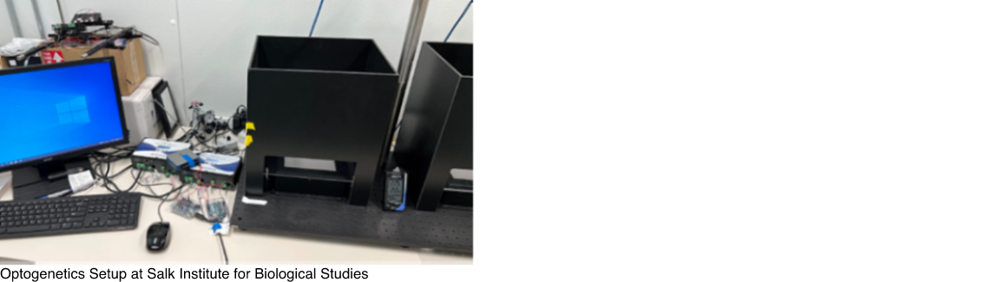

Joiner Lab Optogenetics Project
(In Progress)
The Optogenetics Device
The purpose of the optogenetics device is to control the behavior of fruit flies through the expression of light-sensitive channels on target neurons. The device produces a certain frequency of light at a specific wavelength to activate these channels.
- Coded an Arduino UNO to control the intensity and frequency of a 620-625nm LED strip
- Pulse Width Modulation was utilized to maintain a frequency of 10 Hz
- MOSFET applied to the wiring to control the current flowing through the circuit
- Currently experimenting with different resistors to determine a suitable intensity due to unexpected excitatory behavior in preliminary tests
The Joiner Lab
Joiner Lab conducts research on the molecular mechanisms and neural circuitry that control sleep need in fruit flies. The specificity of neural excitation through optogenetic techniques made optogenetics a viable option for the lab to utilize. With Dr. Joydeep De, a post-doctoral researcher at UCSD, I visited the Molecular Neurobiology Laboratory at Salk Institute for Biological Studies to examine and study their Drosophila optogenetics configuration. My role in this project is replicating the optogenetics setup from Salk Institute and to program the frequency at which the LED lights illuminate. However, the Metaphase LED controller that the Molecular Neurobiology Laboratory uses costs several hundred dollars. By using the Arduino, breadboard, and MOSFET instead, I was able to save my lab approximately $500-$600.
